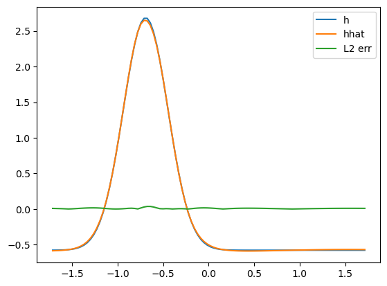

import numpy as np
import pandas as pd
import matplotlib.pyplot as plt
import matplotlib.animation as anim
import jax
import jax.numpy as jnp
import optax
import flax.linen as nn
import sympy as sp
from itertools import combinations_with_replacement
import sklearn.linear_model as lm
import sklearn.metrics as met
import sklearn.feature_selection as fs
from IPython.display import Math,display# Load data
def load_data(data_path, batch_size):
# Load data
raw_data = np.load(data_path)
h = raw_data["h"].astype(jnp.float32)
x = raw_data["x"].astype(jnp.float32)
t = raw_data["t"].astype(jnp.float32)
# Mean center, std center data
h = (h - jnp.mean(h)) / jnp.std(h)
x = (x - jnp.mean(x)) / jnp.std(x)
t = (t - jnp.mean(t)) / jnp.std(t)
# Load data in batches
data = []
index_list = list(np.ndindex(h.shape))
for ind in range(0,len(index_list),batch_size):
inds = index_list[ind:ind+batch_size]
xts = np.array([[x[j],t[i]] for i,j in inds])
hs = np.array([[h[i,j]] for i,j in inds])
if len(xts) == batch_size:
data.append((xts,hs))
return h,x,t,data
h,x,t,data = load_data("data/simple_wave.npz", 10000)# Flax style
class MyNet(nn.Module):
@nn.compact
def __call__(self, x):
x = nn.Dense(60)(x)
x = nn.tanh(x)
x = nn.Dense(12)(x)
x = nn.tanh(x)
x = nn.Dense(1)(x)
return x
rng1,rng2 = jax.random.split(jax.random.PRNGKey(42))
model = MyNet()
init_data = jax.random.normal(rng1,(2,))
params = model.init(rng2,init_data)
print(jax.tree_util.tree_map(lambda x: x.shape, params))
# Training
@jax.jit
def mse(params,input,targets):
def squared_error(x,y):
pred = model.apply(params,x)
return jnp.mean((y - pred)**2)
return jnp.mean(jax.vmap(squared_error)(input,targets),axis=0)
tx = optax.adam(1e-2)
opt_state = tx.init(params)
loss_grad_fn = jax.value_and_grad(mse)
epochs = 1000
all_x = jnp.array([data[i][0] for i in range(len(data))])
all_y = jnp.array([data[i][1] for i in range(len(data))])
for i in range(1000):
x_batch = data[i%len(data)][0]
y_batch = data[i%len(data)][1]
loss_val, grads = loss_grad_fn(params, x_batch, y_batch)
updates, opt_state = tx.update(grads, opt_state)
params = optax.apply_updates(params, updates)
if i % 100 == 0:
valid_loss = mse(params,all_x,all_y)
print("Validation loss step {}: {}".format(i,valid_loss))FrozenDict({
params: {
Dense_0: {
bias: (60,),
kernel: (2, 60),
},
Dense_1: {
bias: (12,),
kernel: (60, 12),
},
Dense_2: {
bias: (1,),
kernel: (12, 1),
},
},
})
Validation loss step 0: 1.0899022817611694
Validation loss step 100: 0.164273202419281
Validation loss step 200: 0.0930459052324295
Validation loss step 300: 0.018842574208974838
Validation loss step 400: 0.0014461365062743425
Validation loss step 500: 0.0005430973251350224
Validation loss step 600: 0.00031869616941548884
Validation loss step 700: 0.0002099172124871984
Validation loss step 800: 0.00015440769493579865
Validation loss step 900: 0.0001247481268364936# Plot fit
X,T = jnp.meshgrid(x,t)
xt_points = jnp.vstack([X.flatten(),T.flatten()]).T
hhat = model.apply(params,xt_points).reshape(X.shape)
diff = np.sqrt((h - hhat)**2)
# hhat_t = h_t.reshape(X.shape)
# hhat_t = np.array(term_matrix[diff_terms[1]]).reshape(X.shape)
def animate_data(x,t,data_list,labels):
fig = plt.figure()
plots = []
for i in range(len(data_list)):
plot = plt.plot(x,data_list[i][0,:],label=labels[i])[0]
plots.append(plot)
def anim_func(j):
for i in range(len(plots)):
plots[i].set_ydata(data_list[i][j,:])
# p1.set_ydata(h[j,:])
# p2.set_ydata(hhat[j,:])
# p3.set_ydata(hhat_t[j,:])
plt.legend()
approx_anim = anim.FuncAnimation(fig, anim_func, range(len(t)))
plt.show()
animate_data(x,t,[h,hhat,diff],["h","hhat","L2 err"])
# Test grad
t_i = 0.3
x_i = 0.3
def model_for_diff(x,t):
new_x = jnp.array([x,t])
return model.apply(params, new_x)[0]
def model_in_x(x):
new_x = jnp.array([x,t_i])
return model.apply(params, new_x)[0]
def model_in_t(t):
new_t = jnp.array([x_i,t])
return model.apply(params, new_t)[0]
test_x = 0.3
print(model_in_x(test_x))
jax.grad(model_in_x)(test_x)
jax.grad(model_for_diff,0)(test_x,t_i)
jax.grad(jax.grad(model_in_x))(test_x)
jax.grad(jax.grad(jax.grad(model_in_x)))(test_x)
# Apply to all x
jax.lax.map(jax.grad(model_in_x), X.flatten())-0.5892999DeviceArray([-4.625326 , -3.988937 , -3.3429172, ..., -6.87004 ,
-6.2941 , -5.607827 ], dtype=float32)# symoblic library
x_sym,t_sym = sp.symbols("x t")
h_sym = sp.Function("h")
# Make library
max_poly_order = 4
max_diff_order = 4
# diff_terms = [sp.diff(h_sym(x_sym,t_sym), x_sym, i) for i in range(max_diff_order+1)]
diff_terms = [h_sym(x_sym,t_sym)] + [sp.Function(str(h_sym)+"_"+(i*str(x_sym)))(x_sym,t_sym) for i in range(1,max_diff_order+1)]
# Differentiate model and store results with autodiff
diff_term_values = {}
for i in range(max_diff_order+1):
diff_func = model_for_diff
for _ in range(i):
diff_func = jax.grad(diff_func, 0)
def unpack_diff_func(x):
new_x,new_t = x
return diff_func(new_x,new_t)
diff_term_values[diff_terms[i]] = np.array(jax.lax.map(unpack_diff_func, xt_points))
# Construct terms
term_values = {}
for po in range(max_poly_order+1):
if po == 0:
term = sp.core.numbers.One()
term_values[term] = np.ones(xt_points.shape[0])
else:
combos = combinations_with_replacement(diff_terms,po)
for combo in combos:
term = 1
temp_term_value = 1
for combo_term in combo:
term *= combo_term
temp_term_value *= diff_term_values[combo_term]
term_values[term] = temp_term_value
# Time derivative
def unpack_diff_func(x):
new_x,new_t = x
return jax.grad(model_for_diff,1)(new_x,new_t)
# term_values[sp.Function(str(h_sym)+"_"+str(t_sym))] = jax.lax.map(unpack_diff_func, xt_points)
h_t = -np.array(jax.lax.map(unpack_diff_func, xt_points))
h_t_term = sp.Function("h_t")(x_sym,t_sym)/home/connor/mambaforge/envs/website/lib/python3.9/site-packages/matplotlib/animation.py:879: UserWarning: Animation was deleted without rendering anything. This is most likely not intended. To prevent deletion, assign the Animation to a variable, e.g. `anim`, that exists until you output the Animation using `plt.show()` or `anim.save()`.
warnings.warn(term_matrix = pd.DataFrame(term_values)
ols = lm.LinearRegression()
ols.fit(term_matrix,h_t)
print("R^2: {}".format(met.r2_score(ols.predict(term_matrix), h_t)))
print("------------------------------------------")
def forward_r2_select(A,b,num_terms=4):
for i in range(1,num_terms+1):
sfs = fs.SequentialFeatureSelector(
lm.LinearRegression(),
n_features_to_select=i,
scoring=met.make_scorer(met.r2_score)
)
new_A = sfs.fit_transform(A,b)
new_ols = sfs.estimator
new_ols.fit(new_A,b)
# print("h_t(x,t) = ")
feat_names = sfs.get_feature_names_out(A.columns)
eq_rhs = 0
for name,coef in zip(feat_names,new_ols.coef_):
# print(" {} {}".format(round(coef,2),name))
# eq_rhs = eq_rhs + round(coef,2)*name
eq_rhs = eq_rhs + round(coef,6)*name
eq_expr = sp.Eq(h_t_term, eq_rhs)
# display(Math(sp.printing.latex(eq_expr,mode="equation",mul_symbol="dot")))
display(Math(sp.printing.mathml(eq_expr)))
display(Math("$R^2$: {}".format(met.r2_score(new_ols.predict(new_A),b))))
print("------------------------------------------")
print()
forward_r2_select(term_matrix,h_t)R^2: 0.9996331408283864
------------------------------------------<IPython.core.display.Math object><IPython.core.display.Math object>------------------------------------------
<IPython.core.display.Math object><IPython.core.display.Math object>------------------------------------------
<IPython.core.display.Math object><IPython.core.display.Math object>------------------------------------------
<IPython.core.display.Math object><IPython.core.display.Math object>------------------------------------------
lasso = lm.Lasso(10)
lasso.fit(term_matrix,h_t)
lasso.coef_/home/connor/mambaforge/envs/website/lib/python3.9/site-packages/sklearn/linear_model/_coordinate_descent.py:648: ConvergenceWarning: Objective did not converge. You might want to increase the number of iterations, check the scale of the features or consider increasing regularisation. Duality gap: 1.195e+03, tolerance: 1.101e+01
model = cd_fast.enet_coordinate_descent(array([ 0.00000000e+00, -0.00000000e+00, 0.00000000e+00, -0.00000000e+00,
0.00000000e+00, 0.00000000e+00, -0.00000000e+00, 0.00000000e+00,
-0.00000000e+00, -0.00000000e+00, -0.00000000e+00, -0.00000000e+00,
0.00000000e+00, 0.00000000e+00, -1.50640915e-04, -0.00000000e+00,
5.69431916e-04, 1.18193902e-05, -2.18875032e-05, 4.46483542e-06,
-5.25964399e-08, -0.00000000e+00, 0.00000000e+00, -0.00000000e+00,
-0.00000000e+00, 2.82281081e-05, -0.00000000e+00, 0.00000000e+00,
-0.00000000e+00, 7.39303493e-05, -0.00000000e+00, -0.00000000e+00,
-8.47560397e-06, 5.65473227e-06, -1.88118332e-06, 1.77859888e-08,
0.00000000e+00, -0.00000000e+00, -6.32391542e-04, -6.05699474e-06,
1.40470384e-03, 3.28623394e-05, 1.11278148e-05, -7.83880032e-06,
3.26920101e-07, 2.57864308e-08, 5.03071375e-07, 1.71790674e-05,
-1.29700537e-07, -2.06226220e-06, 3.08478771e-08, -1.26875259e-09,
-3.65319899e-08, -5.71622513e-09, 1.73989310e-10, -4.82804260e-12,
-0.00000000e+00, 0.00000000e+00, 0.00000000e+00, -0.00000000e+00,
2.01220584e-05, 0.00000000e+00, -0.00000000e+00, -0.00000000e+00,
4.91113788e-07, -0.00000000e+00, 3.29471913e-05, 3.31477098e-06,
-5.47088450e-06, 3.68875853e-07, 7.87649946e-09, 0.00000000e+00,
-6.92211239e-04, -1.54502419e-04, 9.72773753e-06, 0.00000000e+00,
-5.89334856e-05, -1.96974408e-07, -3.36465692e-06, 6.19466524e-08,
-2.85835844e-09, 1.91476650e-06, 4.65370478e-07, -1.42680773e-08,
-5.40615485e-07, 1.44470210e-08, 3.80601298e-10, -2.10817444e-08,
5.01193283e-10, -1.10069199e-11, -9.32347279e-13, -8.04249846e-05,
5.08046812e-04, -2.90351405e-05, 1.32760758e-06, -5.69390578e-06,
-9.12666959e-07, 2.05705601e-07, -7.95092090e-07, -3.95497641e-08,
-7.25186388e-10, 1.60957547e-05, -1.22544692e-06, 2.32882303e-07,
8.76287943e-08, 5.07030696e-09, 7.59569292e-10, -6.39871738e-09,
7.19202747e-10, 7.38232244e-12, 1.30984933e-12, -4.92546072e-08,
-9.60377796e-08, -1.74239173e-09, -4.23206102e-08, 1.96540026e-10,
5.85258007e-12, 4.61596621e-10, -2.62516769e-10, 5.19117978e-12,
-1.43198312e-13, -6.34083388e-12, 8.31000580e-12, -4.30515273e-13,
2.42088652e-14, -5.05075474e-17])